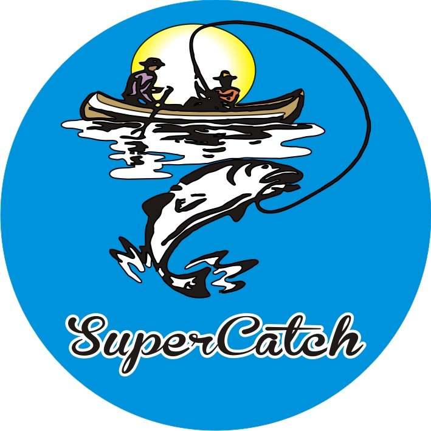
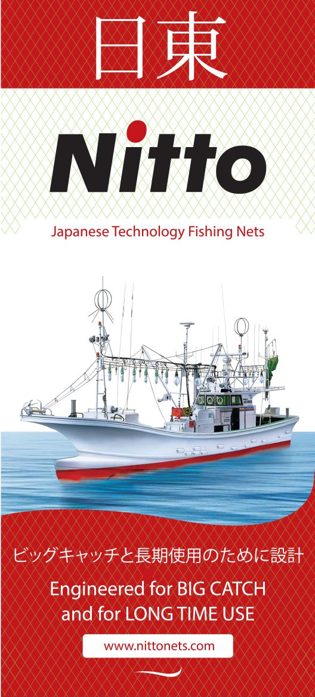
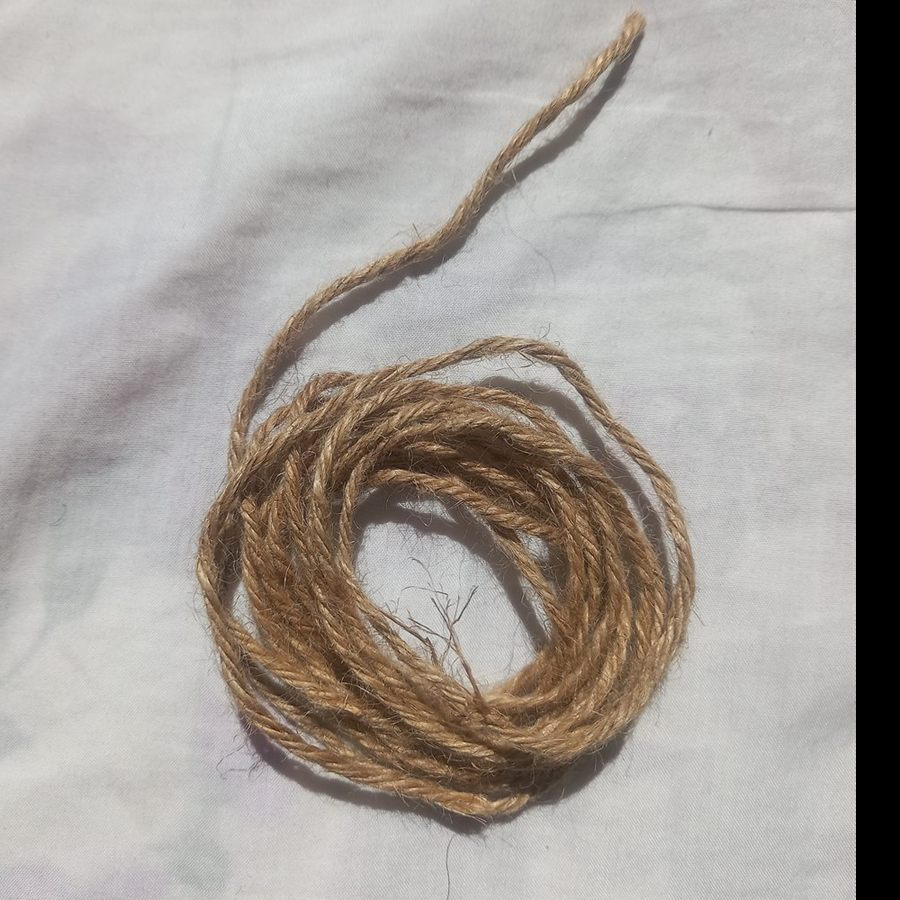

Nets
NetsCategory 01
Nylon Fishing Nets
Our own SuperCatch nets, knitted locally from TORAY Japan yarn, alongside imported Japanese-technology nets.
Explore
Browse every category, add products to your enquiry list, then send one request for availability and pricing.
NetsOur own SuperCatch nets, knitted locally from TORAY Japan yarn, alongside imported Japanese-technology nets.

Nylon Fishing Nets
Nylon Fishing Nets Nets
NetsStrong, hard-wearing high-density polyethylene netting in green, blue and white — made to your requirements.
 Ropes & lines
Ropes & linesMonofilament line in a range of diameters and colours — from clear to fluorescent.
 Ropes & lines
Ropes & linesHDPE, PP, Vinylon and Kuralon ropes in a range of sizes and colours, including our own SuperCatch rope.
Ropes Ropes
Ropes RopesRopes
RopesRopes Tackle & accessories
Tackle & accessoriesHooks, lures, sinkers, floats and swivels — the working kit of every angler.
 Tackle & accessories
Tackle & accessoriesFloats, cast nets, reels, rods and diving gear — the everyday items that keep fishing going.
 Yarn & twine
Yarn & twineTORAY Japan nylon yarn — we are the sole agent and single distributor for TORAY products in Sri Lanka.
Nylon Yarn & Twine
Nylon Yarn & Twine Nets
NetsIndoor cricket nets, safety nets and agriculture nets — netting for work beyond the sea.
Sports, Safety & Agriculture Nets Sports, Safety & Agriculture Nets
Sports, Safety & Agriculture Nets Sports, Safety & Agriculture Nets
Sports, Safety & Agriculture NetsSend us the product, size and quantity — we'll come back with availability and a quotation.
Request a quotation Call +94 11 243 5634